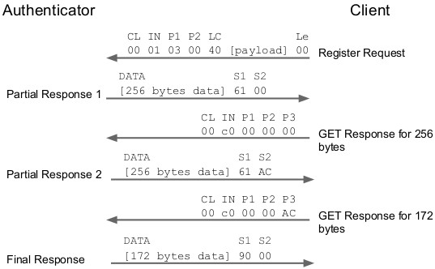

일부 응답은 짧은 APDU에 맞지 않을 수 있습니다. 이러한 이유로 U2F 인증 자는 다음과 같은 방식으로 응답 해야 합니다.
요청이 확장된 길이인 경우( 즉, 3개의 길이 바이트를 가짐) 인증 자는 확장된 길이의 APDU 형식을 사용하여 응답 해야 합니다.
요청이 확장된 길이가 아닌 경우( 즉, 1 길이 바이트를 가짐) 인증자는 ISO 7816-4 APDU 연결을 사용하여 응답 해야 합니다(섹션 a.4 참조). 예를 보려면 아래를 참조하십시오.

5.애플릿 선택
FIDO 클라이언트 는 NFC를 통해 FIDO 인증자와 상호작용을 시작하기 위해 항상 애플릿 선택 명령을 보내야 합니다( shall ). 사과 명령의 구조는 위에서 언급한 원시 메시지 형식과 동일한 APDU 구조를 따릅니다( shall ).
FIDO U2F AID는 다음 필드로 구성됩니다.
필드 값
RID 0xA000000647
AC 0x2F
AX 0x0001
결과적으로 FIDO U2F AID를 사용하여 애플릿을 선택하는 명령은 다음과 같습니다.
필드 값
CLA 0x00
INS 0xA4
P1 0x04
P2 0x00
LEN 0x08
DATA 0xA0000006472F0001
애플릿 선택 명령에 대한 응답으로 FIDO 인증 자는 성공적인 응답의 버전 문자열로 응답해야 합니다. 이 글에서 버전 문자열은 "U2F_V2"이므로 애플릿 선택 명령에 대한 성공적인 응답은 다음 바이트로 구성됩니다.
0x5532465F56329000
6.구현 고려 사항
일부 NFC 인증자는 수동으로 전원을 공급받을 수 있습니다. NFC 필드에서 모든 전원을 끌어옵니다. 인증자의 전원이 충분히 빨리 켜지지 않거나 전원이 충분하지 않으면 사용자 경험이 저하될 수 있습니다.
7.서지
[U2FRAWMESSAGES] Dirk Balfanz, Jakob Ehrensvard. FIDO U2F 원시 메시지 형식, 2014년 8월